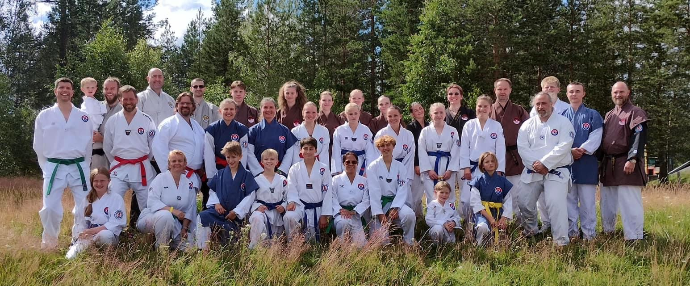
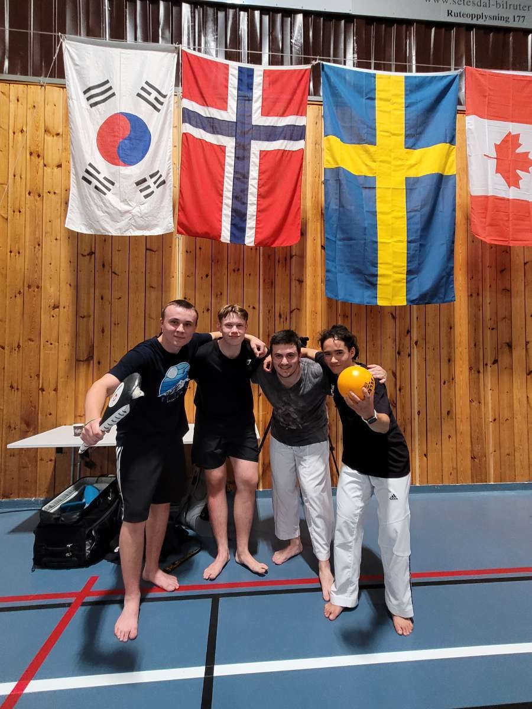

Innlegg
Enda en vellykket sommerfestival i Evje



 Årlig blir det arrangert sommerleir innad i TTU, og i år var det Evje Taekwondo Klubb som igjen arrangerte. Klubbens medlemmer gleder seg alltid til dette, da det er en fin måte å være sosial på og bli kjent med nye mennesker og bli enda bedre kjent med sine egne.
I år stilte vi med hele 33 (!) deltakere, noe som er et rekordbra oppmøte for oss og på hele sommerleiren generelt siden vi var den største klubben! Både barn, ungdommer og voksne i alle aldre og beltegrader deltok, så takk for god innsats.
Sommerfestivalen er en uke med treninger og sosialt hygge. I tillegg til taekwondo var det mulig å prøve koreansk dans, Sun Mudo og Kyeong Dang. I tillegg har man mulighet til å trene med andre mastere og klubber enn sine egne som er en fin kilde til inspirasjon. I år fikk vi i tillegg besøk av en kanadisk master, der vi fikk trent på "Changmookwan-poomse".
I år var det i tillegg duket for to nye aktiviteter - nemlig VM i sleggeball og Kukkiwon-cup.
Kukkiwon-cupen besto av konkurranse i poomse, power breaking, high-kick kyopka og long-kick kyopka.
Klubben stilte med utøvere i nesten alle klasser, men poomse-andelen var naturligvis størst. Med både gull, sølv og bronse-medaljer hadde vi en god grunn til å være stolte over egen innsats.
I 2019 arrangerte Evje VM i sleggeball, og i år var det på tide med det 2. mesterskapet. Klubben vår stilte med to lag, og begge fikk pallplass. "TTG" var et lag ungdommene hadde lagd, og de vant mange kamper og endte da på en 3. plass - gratulerer!
Vår klubb og Hamar dannet selveste vinnerlaget, nemlig "Innlandshøns". Det var stas å bli verdensmestere - så gratulerer med god innsats!
Årlig blir det arrangert sommerleir innad i TTU, og i år var det Evje Taekwondo Klubb som igjen arrangerte. Klubbens medlemmer gleder seg alltid til dette, da det er en fin måte å være sosial på og bli kjent med nye mennesker og bli enda bedre kjent med sine egne.
I år stilte vi med hele 33 (!) deltakere, noe som er et rekordbra oppmøte for oss og på hele sommerleiren generelt siden vi var den største klubben! Både barn, ungdommer og voksne i alle aldre og beltegrader deltok, så takk for god innsats.
Sommerfestivalen er en uke med treninger og sosialt hygge. I tillegg til taekwondo var det mulig å prøve koreansk dans, Sun Mudo og Kyeong Dang. I tillegg har man mulighet til å trene med andre mastere og klubber enn sine egne som er en fin kilde til inspirasjon. I år fikk vi i tillegg besøk av en kanadisk master, der vi fikk trent på "Changmookwan-poomse".
I år var det i tillegg duket for to nye aktiviteter - nemlig VM i sleggeball og Kukkiwon-cup.
Kukkiwon-cupen besto av konkurranse i poomse, power breaking, high-kick kyopka og long-kick kyopka.
Klubben stilte med utøvere i nesten alle klasser, men poomse-andelen var naturligvis størst. Med både gull, sølv og bronse-medaljer hadde vi en god grunn til å være stolte over egen innsats.
I 2019 arrangerte Evje VM i sleggeball, og i år var det på tide med det 2. mesterskapet. Klubben vår stilte med to lag, og begge fikk pallplass. "TTG" var et lag ungdommene hadde lagd, og de vant mange kamper og endte da på en 3. plass - gratulerer!
Vår klubb og Hamar dannet selveste vinnerlaget, nemlig "Innlandshøns". Det var stas å bli verdensmestere - så gratulerer med god innsats!

En av dagene hadde vi mye fritid, så da bestemte flere av klubbens medlemmer å dra på klatrepark, Mineralparken, den samme vi var på i 2019 - og det var en fin måte å utnytte tiden på. Vi fikk servert mye god mat, fikk mye ny inspirasjon på treningene og koste oss generelt masse! Takk for at så mange fra klubben deltok, vi gleder oss allerede til neste år, for da er det endelig Danmark sin tur til å arrangere.Bli med da vel!